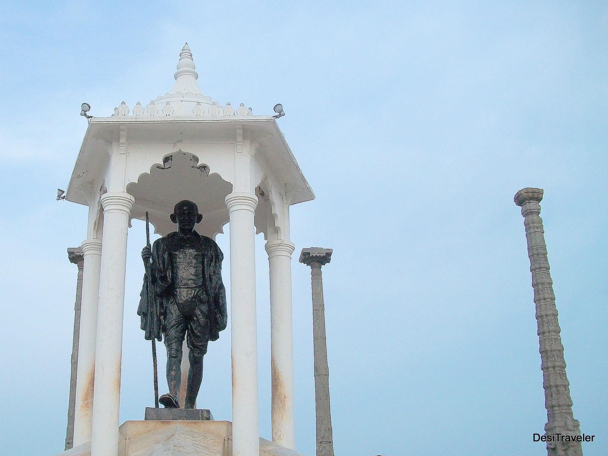
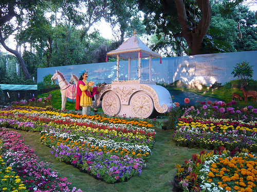
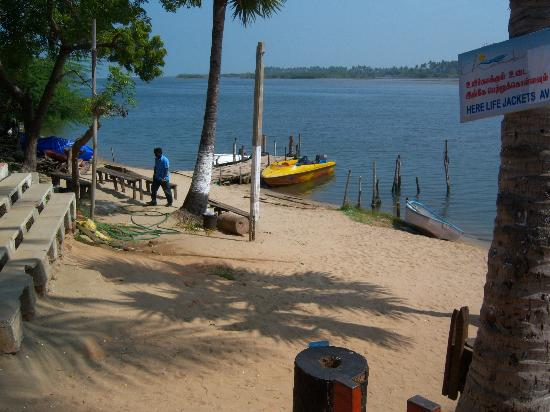
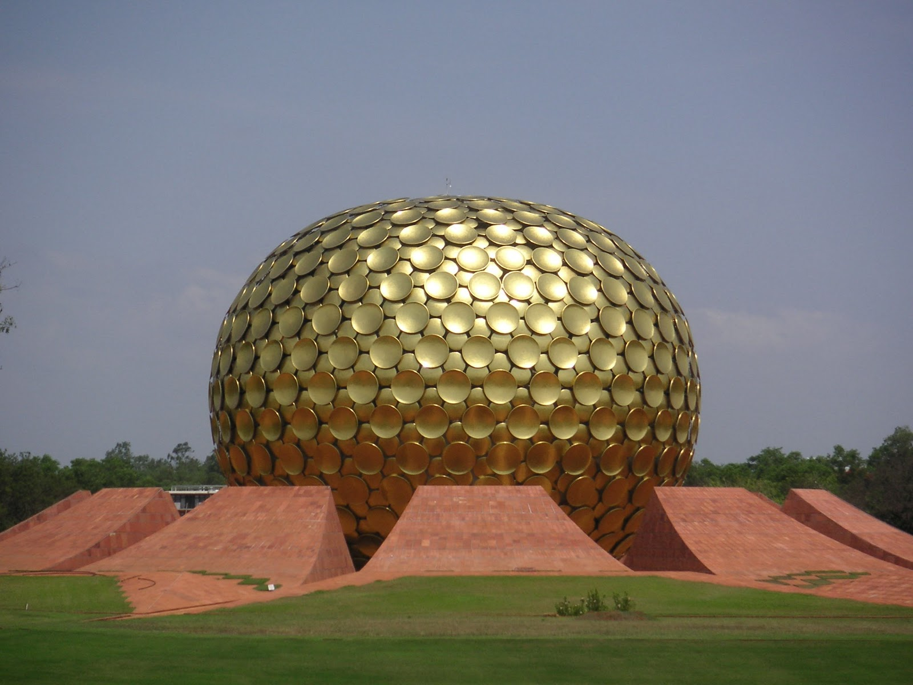

Tourist Spot in Pondicherry
Gandhi Statue
Visitors Time: No time limit

The 1.5 km long promenade running along the beach is the pride of Pondicherry. Most of the landmarks are on the sea front : the statues of Mahatma Gandhi, Jeanne d’Arc, Dupleix, the elegant War memorial raised by the French, the heritage building “Mairie”, the 27 m tall old lighthouse, the circular shaped customs house & Gandhi Thidal.
AAYI MANDAPAM AND BHARATI PARK
Visitors Time: 08:00 hrs to 20:00 hrs

The park facing the governor’s bungalow reflects the French influence. Once called as “place du pantheon” now turned as Aayi mandapam - the emblem of the Pondicherry Government. The park surrounded by Aayi mandapam has been restructured by preserving its heritage.
THE BOTANICAL GARDEN
Visitors Time: 09:00 hrs to 12:45 hrs & 14:00 hrs to 17:45 hrs

The Botanical garden in Pondicherry was created in 1826, once called as “Colonial Park”. When the garden came under the control of the eminent botanist perottet “rare and interesting plants” were procured from Calcutta, Madras, Ceylon and Reunion. Its collection numbers to approx.1500 species.
The park facing the governor’s bungalow reflects the French influence
Visitors Time: 09:00 hrs to 17:00 hrs

Facilities for boating are available at the Boat House on the River Chunnambar, 8kms from Pondicherry. The backwater and the lush greenery on both sides of Chunnambar provide an ideal setting for boating.
AUROVILLE
Visitors Time: 10:00 hrs to 18:00 hrs

Auroville welcomes people from all parts of the world to live together and explore cultural, educational, scientific, spiritual, and other pursuits in accordance with the Auroville charter. Auroville information centre and Matri Mandir [Meditation hall with world’s biggest man-made crystal ball] are the places open to most of the visitors. It offers less to see and lots to experience.